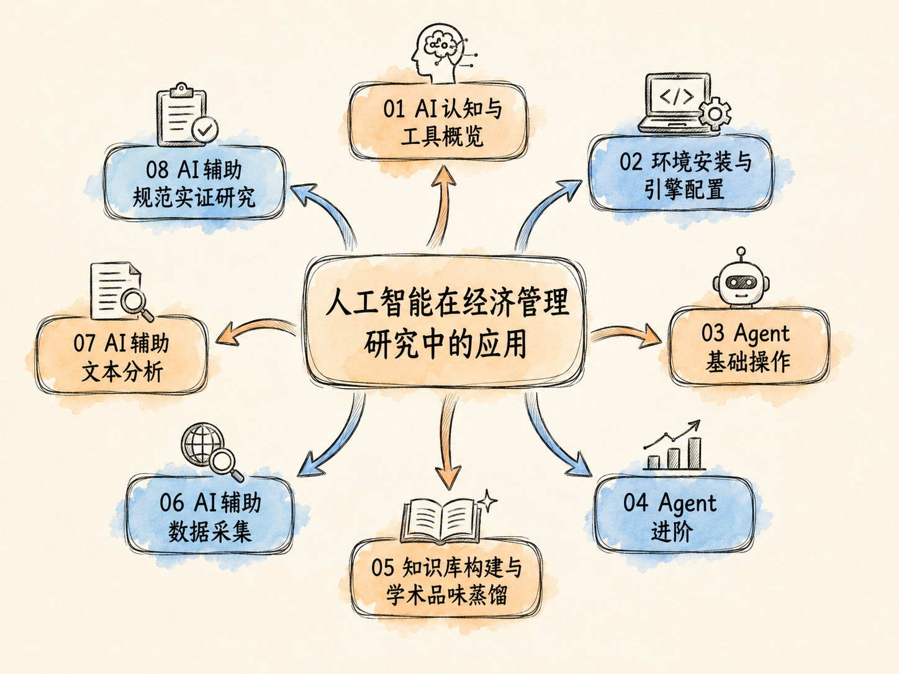

第一讲：AI 认知与工具概览
课程讲义 · 网页教材
授课人： 张晨（西北农林科技大学经济管理学院）
第 1 次课 | 2 课时（90 分钟） | 2026 年夏季学期

本次教学目标
完成本次课后，你应该能够：
- 用通俗语言解释什么是生成式大语言模型（LLM），并举出至少三个它在经管研究中的典型应用场景
- 逐一说出 LLM 的六个核心缺陷，理解为什么「AI 生成的引用必须逐条核实」
- 说清 Agent 和 Chatbot 的本质区别，用自己的话解释 Agent 的四组件公式
- 根据任务类型选择合适的 AI 工具（聊天工具 / Agent 工具），并能解释选择理由
- 了解从「入门→进阶→精通」三阶段学习路径，明确自己当前阶段的学习目标
课前说明
本课程是「人工智能在经济管理研究中的应用」的第一讲，属于「认知奠基」阶段。今天不装任何软件。
在动手操作之前，你需要先搞清楚三个问题：
- AI 到底是什么？它的底层机制决定了它的能力上限
- 它能做什么、不能做什么？知道边界比知道能力更重要
- 为什么需要 Agent？ChatGPT 不够用吗？
这四个课时的教学逻辑是：先理解本质，再动手搭建。 好比做实证研究——先搞清楚识别假设能不能满足，再跑回归。你肯定不希望装了一堆软件之后才发现：这些东西根本解决不了你的问题。
上节：认识 LLM——从原理到能力边界
上节时长建议：45 分钟。重点放在 1.3 节「六缺陷」——这是后续所有操作课的理论基础。
1.1 什么是生成式大语言模型（LLM）？
技术定义
生成式大语言模型（Large Language Model, LLM）是一种基于 Transformer 架构、通过海量文本数据训练得到的深度学习模型。其核心工作机制极其简单：给定上文，预测下一个最可能出现的词元（token），逐词生成完整文本。
这里有三个关键词需要拆解：
- 生成式（Generative）：不是从数据库里检索已有答案，而是从头「生成」新的文本。这也是为什么同一个问题问两遍可能得到不同回答——它每次都在重新生成。
- 大（Large）：指数十亿至万亿级的参数量。参数越多，模型能捕捉的语言模式越复杂。2026 年的主流模型通常在 100B-2T 参数区间。
- 语言（Language）：训练数据是文本，不是数字、图像或代码。尽管它能写代码、能做数学推理，但本质仍是语言模型——它的「思考」是对语言模式的拟合，不是逻辑演绎。
2026 年主流模型概览
当前主流模型普遍采用混合专家架构（Mixture of Experts, MoE），上下文窗口已扩展至百万 token 级别。百万 token 是什么概念？大约 75 万个中文汉字——相当于把一整年的《经济研究》装进一个对话窗口。
| 模型 | 开发商 | 架构特点 | 上下文窗口 | 突出优势 |
|---|---|---|---|---|
| GPT-5.5 | OpenAI | MoE | 128K-1M | 综合能力最均衡 |
| Claude Fable 5 / Opus 4.8 | Anthropic | MoE | 1M | 编程 + 长文本解析最优 |
| DeepSeek V4 / R1 | DeepSeek | MoE | 128K-1M+ | 国产推理最强，完全免费 |
| Kimi K2.6 | 月之暗面 | MoE | 1M（200 万字） | 超长文本处理王者 |
| Gemini 3.1 Pro | MoE | 1M | 多模态 + 科学推理强 |
一个帮助你建立直觉的类比
把 LLM 理解为一个「读过几乎所有公开文字、但不会真正思考」的超级实习生：
- 博闻强记：它读过网上能找到的几乎所有公开论文、教材、代码、新闻报道。让它写一段 DID 的方法论介绍，它写得比教材还流畅；让它列出农业经济学常用的工具变量，它能给出一个不错的清单。
- 反应极快：几秒钟内能读完一篇 50 页的论文并给出总结。人类博士生可能需要一两个小时。
- 但不会真正思考：你让它判断你的工具变量是否满足排他性约束——它做不到。因为后者需要因果推断的专业判断、需要理解研究情境、需要权衡多种可能性的相对合理性，而不仅仅是「在训练数据中见过的语言模式」。
- 会信口开河：当它不知道某个具体事实时，它不会说「我不知道」，而是会根据语言概率拼凑一个「听起来很合理」的答案。这在学术界是致命的——虚构一条参考文献可能让你的论文在审稿环节被直接拒稿。
一个简单的思维实验
打开 ChatGPT 或 DeepSeek，输入：
「请写一段 200 字的文字，介绍双重差分法（DID）在农业经济学中的应用。」
你会发现它写得相当流畅——定义准确、文献提及合理、行文符合学术规范。
再输入：
「我正在用 CHFS 2015-2019 面板数据研究宽带接入对农户非农收入的影响。我计划用『村到最近电信基站的距离』作为宽带接入的工具变量。这个工具变量是否满足排他性约束？请给出具体分析。」
你会发现它的回答要么是泛泛而谈的教科书式分析，要么就是一套「听上去处处合理、实则没有实质性判断」的车轱辘话。它不知道你的研究区域的地形特征、不了解电信基础设施的空间分布逻辑、不清楚基站的选址决策过程——而这些才是判断工具变量有效性的关键信息。
这就是 LLM 的能力边界：语言层面的流畅掩盖不了实质判断的缺失。
1.2 LLM 能做什么？
核心通用能力
理解 LLM 能做什么，不要想「它能替代人的哪些工作」，而要想「哪些工作只需要语言层面的能力就能完成」。
| 能力 | 底层机制 | 在经管研究中的典型场景 | 可靠性 |
|---|---|---|---|
| 文本生成与润色 | 序列到序列的条件生成 | 英文论文润色、中英互译、审稿意见回复草稿 | 高 |
| 代码编写 | 代码即文本，概率生成 | Stata / Python / R 清洗、回归命令、表格输出（esttab / outreg2） | 中高（需调试） |
| 信息提取 | 模式匹配 + 语义理解 | 从 PDF 论文提取结构化信息（样本量、方法、结论） | 中高 |
| 文本分类与编码 | 多分类任务的概率建模 | 对年报文本做情感分析、对政策文件做主题编码 | 高 |
| 头脑风暴 | 生成式发散 | 研究设计讨论、识别策略列举、稳健性检验建议 | 中（需人工筛选） |
在研究各环节的具体应用
| 研究环节 | LLM 的具体应用 | 人工必须做的事 |
|---|---|---|
| 文献综述 | 初筛归类、结构化信息提取、按主题分组的初稿生成 | 判断文献质量、确定纳入排除标准、核实引用 |
| 研究设计 | 列举可能的识别策略（DID、IV、RD）、推荐数据来源、建议稳健性检验方案 | 选择适合研究情境的策略、判断识别假设是否满足 |
| 代码编写 | 生成 Stata / Python / R 代码模板，覆盖数据清洗→基准回归→稳健性检验全流程 | 调试代码、验证结果、根据数据特征调整设定 |
| 文本润色 | 语法纠错、表达优化、按期刊风格调整行文 | 保留学术观点和论证逻辑的完整性 |
| 文本分析 | 对年报、新闻、政策文件做情感分析、主题建模、关键词提取 | 定义编码框架、验证分类准确率、解释结果的经济含义 |
学界初步共识
机械性、重复性、格式化的工作交给 AI；创造性、判断性、把关性的工作留在自己手里。
这不是说 AI 不重要——恰恰相反。一个能处理 80% 机械性工作的工具，能让研究者把精力集中在 20% 真正需要专业判断的环节上。这带来的效率提升是数量级的。
把 AI 定位为「超级研究助理」而非「合作者」：
- 它能帮你跑 100 个回归——但你得设计回归方程
- 它能帮你润色三段引言——但你得确定论证逻辑
- 它能帮你提取 500 篇论文的结构化信息——但你得定义提取框架
1.3 LLM 有什么缺陷？（上节重点）
这一节是今天最重要的内容。理解 LLM 的局限，比知道它的能力更重要。以下六个缺陷，每一个都可能让你的研究翻车。
缺陷一：幻觉——编造事实与虚构引用
这是 LLM 最严重的缺陷，没有之一。模型不知道的事，它会用最自信的语气「编」一个听起来很合理的答案。
关键证据：
- Linardon et al.（2025）系统评估 GPT-4o 生成的文献综述，发现 19.9% 的引用完全不存在，另有 45.4% 的引用存在期刊名、卷号、页码或作者名的错误。合计超过 65% 的引用有问题。
- NeurIPS 2025 被接收论文中，53 篇包含 100 个完全虚构的引用——这些论文都经过同行评审，意味着审稿人也没发现。
- Springer Nature 某已发表论文中 14 条参考文献有 12 条不存在，最终撤稿。
为什么 LLM 会产生幻觉？
本质原因是 LLM 的训练目标是「生成概率上最合理的文本序列」，而非「陈述事实」。模型没有「事实」的概念——它只有「在我读过的文本中，这些词以这种顺序出现的概率最高」的概念。
当一个问题的答案不在训练数据中时，「我不知道」并不是概率最高的序列——编一个看起来像参考文献的字符串反而是。这是因为训练数据中通篇都是引用格式，模型学会了「在讨论某主题时，后面跟着一串（作者，年份）格式的文字看起来最合理」。
对经管研究的致命影响：
你让 LLM 帮你写文献综述。它流利地引用了 30 篇文献。你扫了一眼，觉得观点合理、行文流畅，直接贴进论文。投稿后，审稿人随手查了其中一篇——不存在。再查一篇——也不存在。审稿人得出结论：作者在伪造文献。拒稿，可能附带学术不端的指控。
底线：每一条 AI 生成的引用，都必须逐条人工核实。没有例外，没有捷径。
缺陷二：知识截止日期
LLM 的知识冻结在训练数据截止日。主流模型的截止日期约在 2024 年中到 2025 年初。
这意味着什么：
- 2025 年中央一号文件的任何新提法，它不知道
- 2025 年发表在 AER 上的最新论文，它没读过
- 2025 年 CHFS 最新一轮调查的数据结构和变量名，它不清楚
- 某个政策在 2024 年底发生了调整，它只能描述调整前的版本
怎么应对：
给它提供最新文件原文。LLM 处理输入文本的能力不受知识截止日限制——你给它一份 2025 年的政策文件，它马上就能分析其结构和要点。知识截止日限制的是它「脑子里自带的」知识，不影响它对「你提供的」文本的理解和加工。
缺陷三：结果不可复现
LLM 是概率系统。同一个 prompt，多次运行，输出可能不同。
关键证据：
同一 prompt 多次运行，47%-76% 的代码任务产生不同输出。这意味着你不能说「我的回归结果是 ChatGPT 跑出来的」。
对经管研究的意义：
学术研究的核心要求之一是可复现性。LLM 的输出本质上不可复现——因为温度参数（控制输出随机性的参数）使得每次生成的 token 序列可能不同。
怎么办？AI 只负责生成代码模板和写作草稿。 实际的数据分析和定量结果，你必须自己运行、自己验证、自己留档。
缺陷四：推理能力局限
LLM 能流畅地解释计量方法，但不等于能正确地使用计量方法。这两个能力之间存在根本性的鸿沟。
陶哲轩的实测（2026）：
陶哲轩让 Claude Code 完成 Lean 形式化证明任务。Claude Code 运行了 45 分钟，产生了零可用代码。陶哲轩的评价是：「目前 AI 在形式化证明上的表现相当于一个刚学会语法但完全不懂数学的本科生。」
更严重的：LLM 不理解识别假设
这是对经管研究者来说最重要的一点。LLM 会忽视：
- 工具变量的排他性（exclusion restriction）：你告诉 LLM「我用降雨量作为农业收入的工具变量」，它可能说「听起来合理」——但它不会追问「降雨量是否通过影响农业生产以外的渠道影响被解释变量」。
- DID 的平行趋势（parallel trends）：LLM 可以帮你画事件研究图，但它不会告诉你「处理前趋势已经明显发散，DID 估计可能有偏」。
- RD 的连续性条件（continuity assumption）：LLM 不理解断点附近的样本是否可能存在自选择。
识别假设是计量经济学的核心训练内容——它不是「下一个词预测」能处理的。这里的判断必须由研究者自己做。
缺陷五：无法真正执行操作
LLM 本身只是文本生成器。它不能：
- 在你的电脑上读写文件
- 在你的 Stata 里运行代码
- 访问数据库下载数据
- 打开浏览器搜索实时信息
- 把你的 Markdown 文件转换成 Word 文档
Agent 框架通过「工具调用」（Tool Use）赋予了 LLM 执行能力——它会调用文件系统 API、运行 Shell 命令、调用外部 MCP 服务。但这里有两个问题：
- 能力有，但不可靠：Microsoft Research（2026）发现 Agent 在多步文档编辑任务中平均损坏 25% 的内容
- 需要额外配置：工具调用能力不是开箱即用的，需要安装、配置、调试
这正是本课程后续三讲要解决的核心问题——让 AI 从「能说」变成「能干活」。
缺陷六：经济学专业能力的结构性缺失
Ben Golub（Northwestern, 2026）在论文中系统归纳了 LLM 在经济学研究中的四点结构性缺失：
- 不理解学科发表规范
- 不知道《经济研究》和 AER 的行文风格差异
- 不知道中文经济学论文和英文论文在引言结构上的不同传统
- 不知道不同期刊对表格格式、参考文献格式的规定
- 只顾「编译通过」而非正确性
- 代码能运行 = 结果正确？在经济学里这远远不够
- 看标准误聚类到哪个层面、看固定效应设定是否合理、看是否遗漏了关键的稳健性检验——这些 LLM 不会主动做
- 宁可胡猜不说「不确定」
- 经济学训练强调：「识别假设不满足，结论不可靠」
- LLM 被训练成在不确定时给出最可能的答案，而不是说出「在这个设定下，我无法给出可靠判断」
- 无法进行跨领域原创概念连接
- 能拼凑已有知识，不能产出新概念
- 「数字普惠金融对农户非农就业的影响」这个选题来自研究者对两个领域交叉地带的洞见——LLM 可以帮你在已有框架内分析，但不能提出这个交叉视角
LLM 擅长与不擅长：能力矩阵
以下矩阵是经管研究场景下的综合评估，基于 2025-2026 年的最新测评：
| 场景 | 擅长程度 | 说明 |
|---|---|---|
| 文本情感 / 情绪分析 | ★★★★★ | 接近甚至超过人工编码一致性 |
| 文本分类与编码 | ★★★★★ | 对年报、政策文本的分类准确率超过 90% |
| 中英论文润色与翻译 | ★★★★☆ | 润色质量接近专业语言编辑 |
| 代码模板生成 | ★★★★☆ | 能生成语法正确的 Stata / Python / R 代码，但需调试 |
| 文献初筛与信息提取 | ★★★★☆ | 适合初筛和结构化提取，但分类结果需人工验证 |
| 研究设计头脑风暴 | ★★★☆☆ | 能提供思路拓展，但实质性判断需研究者把握 |
| 经济学理论创新 | ★☆☆☆☆ | 不能产出新的理论概念或分析框架 |
| 因果推断（DID / IV / RD） | ★☆☆☆☆ | 不能判断识别假设是否满足 |
| 独立数据解释 | ★☆☆☆☆ | 能描述统计模式，不能判断因果关系 |
| 大型微观数据处理 | ★☆☆☆☆ | 能生成处理代码，但不能理解数据生成过程 |
| 参考文献生成 | ☆☆☆☆☆ | 绝对不能依赖 |
| 可复现定量结果 | ☆☆☆☆☆ | 本质上不可复现 |
常见误区澄清
在进入下一节之前，先澄清关于 LLM 的三个最常见误区：
误区一：「AI 会取代研究者。」
不会。AI 替代的是机械性、重复性的工作环节。研究问题的提出、识别策略的设计、结果的经济学解释——这些需要学科训练、专业判断和创造性思维的工作，AI 暂时做不了，而且在可预见的未来也难以做到。AI 取代的不是研究者，而是不用 AI 的同行。
误区二：「AI 给出的答案就是正确答案。」
LLM 的输出是概率最高序列，不是事实陈述。它可能输出语法完美但事实完全错误的答案——而且说得非常自信。对 AI 的输出保持不信任，是使用 AI 的第一素养。
误区三：「只要 prompt 写得足够好，AI 什么都能做。」
Prompt 工程能提升输出质量，但改变不了 LLM 的本质局限。再好的 prompt 也无法让 LLM 理解识别假设、判断工具变量的排他性、评估平行趋势的合理性。知道 prompt 的边界，和知道怎么写 prompt 同样重要。
底线
LLM 是「超级但有限的助手」。
正如洪永淼和汪寿阳（2023）所指出：「基于大数据的人工智能因果推断本质上是一种统计关系推断，需要引入经济理论或实验方法帮助识别真正的因果关系。」
这句话点出了核心矛盾：LLM 做的是统计模式匹配，经济学研究需要的是因果识别。两者之间有不可消除的张力。AI 可以帮你做得更快，但不能替代你判断做得对不对。
下节：从 LLM 到 Agent——工具选择与学习路径
下节时长建议：45 分钟。重点是 2.2 节「Agent 概念」和 2.5 节「学习路径」——前者是后续三讲的理论基础，后者是学生课后实践的路线图。
2.1 为什么需要 Agent？
从一段日常困境说起
你要做一篇论文：从 CHFS 下载数据、清洗缺失值和异常值、生成描述性统计、跑五组基准回归、做两组稳健性检验、生成 LaTeX 格式的回归表格。
用 ChatGPT 的做法：
- 在聊天框里输入：「请给我一段 Stata 代码，用 CHFS 2019 数据做描述性统计」
- 把生成的代码复制到 Stata do-file 编辑器
- 跑代码，报错了——变量名不对
- 把报错信息贴回 ChatGPT：「变量名不对，CHFS 2019 的变量名是什么？」
- ChatGPT 说了一堆变量名——你逐个试，有的对有的错
- 重复以上步骤五组回归 × 两次稳健性检验…
每一步，你都是人肉 API——在 ChatGPT 和 Stata 之间搬运信息和结果。三步以上，上下文就丢了。ChatGPT 记不住你上一步做了什么、数据长什么样、报错原因是什么。
Agent 的本质区别
Chatbot 的工作流程是一条线段：用户输入 → 模型生成回答 → 结束。
Agent 的工作流程是一个循环：用户交代目标 → Agent 拆解为子任务 → 调用工具执行 → 观察执行结果 → 根据结果调整下一步 → 继续执行 → 直到目标完成。
用经济学的话说：Chatbot 是一次性博弈，Agent 是序贯决策。Agent 能「看到」自己上一步操作的结果，并根据反馈修正后续步骤。
回到上面的例子。用 Agent 的做法：
你只需要说一句：「用 CHFS 2019 数据，做农户数字金融使用对收入影响的基准回归，包括描述性统计、基准 OLS、工具变量回归，输出 LaTeX 表格。」
Agent 自己会：打开数据文件 → 查看变量名 → 选择合适变量 → 编写代码 → 运行代码 → 看到报错 → 查找原因 → 修正代码 → 重新运行 → 直到成功 → 生成表格。
你在这个过程中的角色：给定目标、把关结果、解释经济含义。
Agent = 「自动干活」的能力
这正是 Agent 的价值所在：从「你说我做」进化到「你说目标，我自主完成」。
2.2 Agent 的核心概念
核心公式
OpenAI 安全系统负责人 Lilian Weng（2023）提出了被广泛引用的 Agent 核心公式：
Agent = LLM（大脑） + Planning（规划） + Memory（记忆） + Tool Use（工具调用）
四组件详解
| 组件 | 功能 | 通俗理解 | 在经管研究中的体现 |
|---|---|---|---|
| LLM（大脑） | 理解任务、推理分析、做出决策 | 没有大脑就没有智能——这是基础 | 理解「做 DID 分析」意味着什么 |
| Planning（规划） | 将复杂目标拆解为可执行的子任务序列 | 「我要从西安去北京」→ 先到高铁站、买票、上车、到站——Agent 对研究任务做同样的事 | 「用 CHFS 研究数字金融对农户收入的因果效应」→ 自动拆解为数据加载→变量筛选→描述性统计→基准 OLS→内生性处理→IV 回归→稳健性检验→结果输出 |
| Memory（记忆） | 短期记忆（当前对话）、工作记忆（当前项目上下文）、长期记忆（跨项目的知识和偏好） | 不用每次都从零开始交代背景 | 记住你的研究领域是农业经济学、常用数据集是 CHFS、偏好控制县级固定效应 |
| Tool Use（工具调用） | 通过标准化接口调用外部工具：读写文件、执行 Shell 命令、搜索网页、操作数据库、调用 API | MCP 协议——AI 世界的 USB-C，一个接口接所有外设 | 读 .dta 文件、运行 Stata / Python、搜索 Semantic Scholar、读写 Zotero 文献库 |
一个直观类比
| 角色 | 能力 | 类比 |
|---|---|---|
| LLM 本身 | 读过很多书，能说会道 | 刚入学的博士生——知道很多概念，但不知道怎么动手做研究 |
| LLM + Tool Use | 能说，也能动手操作工具 | 学会了用 Stata 的博士生——能跑回归，但需要别人一步步指导 |
| LLM + Tool Use + Memory | 能说、能动手、能记住上下文 | 跟你合作了半年的 RA——知道你的研究偏好，不用每次从头交代 |
| Agent（四组件齐全） | 能说、能动手、能记住、能自己规划 | 独立做事的博士后——给定目标，自己规划步骤、操作工具、检查结果、修正错误 |
2.3 主流 Agent 工具概览
2026 年的 Agent 生态百花齐放。以下是六款最受关注的主流工具。
六款工具速览
| 工具 | 开发者 | 开源 | 核心定位 | 一句话 |
|---|---|---|---|---|
| Claude Code | Anthropic | ✗ | 最强编程 Agent，本地执行 | SWE-bench Pro 69.2%，深度代码推理 |
| OpenAI Codex | OpenAI | CLI 开源 | 云端沙箱编程平台 | 8 并行子代理，ChatGPT 生态无缝衔接 |
| OpenCode | Anomaly 社区 | MIT | 模型无关的开放 Agent | 176k Stars，75+ 模型供应商，完全免费 |
| OpenClaw | P. Steinberger | MIT | 多通道个人 AI 助手 | 250k+ Stars，22+ 消息平台，手机操控 |
| Hermes Agent | Nous Research | MIT | 自进化 Agent | 自动创建技能，持久记忆，越用越聪明 |
| WorkBuddy | 腾讯云 | ✗ | 中国企业 AI 办公平台 | 微信 / 企微集成，月访问 8.85 亿 |
快速定位指南
- Claude Code = 编程最强的终端助手——跑回归、调代码、写论文的首选，适合「把活干好」
- OpenAI Codex = 云端版 Claude Code——代码在远程沙箱跑，不占本地资源，ChatGPT 用户零学习成本
- OpenCode = 开源版 Claude Code——完全免费、不绑定任何模型供应商，但需要自己折腾初始配置
- OpenClaw = 住在手机里的 AI 管家——通过微信 / WhatsApp / Telegram 随时发指令，7x24 在线执行
- Hermes Agent = 会自我进化的 AI 学徒——用得越多，它越了解你的研究领域和工作习惯
- WorkBuddy = 最懂中国企业办公的 AI 平台——你已经在用的微信 / 企微 + AI 能力叠加
九维度深度对比
| 维度 | Claude Code | Codex | OpenCode | OpenClaw | Hermes | WorkBuddy |
|---|---|---|---|---|---|---|
| 编程能力 | ★★★★★ | ★★★★☆ | ★★★★☆ | ★★☆☆☆ | ★★★☆☆ | ★★★☆☆ |
| 自主执行 | ★★★★★ | ★★★★★ | ★★★★☆ | ★★★★★ | ★★★★★ | ★★★★☆ |
| 模型灵活性 | ★★☆☆☆ | ★★★★☆ | ★★★★★ | ★★★★☆ | ★★★★★ | ★★★☆☆ |
| 中文支持 | ★★★☆☆ | ★★★☆☆ | ★★★☆☆ | ★★★☆☆ | ★★★☆☆ | ★★★★★ |
| 消息平台集成 | ☆☆☆☆☆ | ☆☆☆☆☆ | ☆☆☆☆☆ | ★★★★★ | ★★★★★ | ★★★★☆ |
| 开箱即用 | ★★★★★ | ★★★★☆ | ★★☆☆☆ | ★★★☆☆ | ★★☆☆☆ | ★★★★★ |
| 隐私 / 本地执行 | ★★★★★ | ★★★☆☆ | ★★★★★ | ★★★★★ | ★★★★★ | ★★★☆☆ |
| 自学习能力 | ★★☆☆☆ | ★★☆☆☆ | ★★☆☆☆ | ★★★☆☆ | ★★★★★ | ★★☆☆☆ |
| 价格友好度 | ★★☆☆☆ | ★★☆☆☆ | ★★★★★ | ★★★★★ | ★★★★★ | ★★★☆☆ |
一个具体的 Agent 工作流示例
以下是一个真实可运行的 Agent 任务——后续三讲安装配置完成后，你就能在你自己的电脑上复现：
你输入的命令：
用 CHFS 2019 数据，研究数字金融使用对农户家庭人均收入的影响。
请完成以下步骤：
1. 数据清洗（处理缺失值、缩尾 1%）
2. 描述性统计（含平衡性检验）
3. 基准 OLS 回归（逐步加入控制变量和固定效应）
4. 工具变量回归（IV = 同村其他家庭数字金融使用率的均值）
5. 输出 LaTeX 格式的回归表格到 results/ 文件夹Agent 的实际执行过程：
- 打开
data/chfs2019.dta，读取变量名和标签 - 识别相关变量：收入变量、数字金融使用变量、人口学控制变量、村级标识变量
- 编写 Python / Stata 代码：数据清洗 → 缺失值处理 → 1% 缩尾
- 运行代码 → 查看输出 → 发现某变量缺失率 40% → 自动决定剔除该变量
- 生成描述性统计表 → 确认样本量合理
- 逐步回归：Model 1（无控制变量）→ Model 2（+ 人口学）→ Model 3（+ 村级 FE）
- 发现 Model 3 中数字金融系数显著减小 → 自动在输出中标注「控制村级 FE 后系数衰减明显，提示村级层面遗漏变量」
- 构造 IV = 同村其他家庭数字金融使用率均值 → 一阶段 F 值 23.7 → 生成弱 IV 检验
- 汇总所有回归到一张 LaTeX 表格 → 保存到
results/regression_table.tex
整个过程你做了什么？ 只用一句话给出了研究目标和基本设定。Agent 完成了从数据到结果的全流程——包括发现数据质量问题时自动调整策略。
这就是 Agent 和 Chatbot 的本质区别。
课程选型理由：为什么是 Claude Code + OpenCode？
- Claude Code 编程能力断层领先：SWE-bench Pro 得分 69.2%，在代码生成、调试、重构上的表现远超同类。你的回归分析、论文复现、数据处理——这些全是代码任务。
- OpenCode 降低入门门槛：自带免费模型（GLM-5 Free 等），对没有 API 预算的学生非常友好。课堂上可以用免费模型演示，课后学生可以零成本练习。
- 同一套 Skills 生态：两者共用 Skills 扩展包，装一次两个工具都能用，迁移成本几乎为零。
- 互为备份：一个出问题时另一个顶上。API 额度用完用免费模型，免费模型能力不够切付费 API——灵活切换。
2.4 主流聊天 / 对话工具一览
Agent 是「动手干活的」，但日常研究中很多时候你只需要「快速问一个问题、查一个概念、润色一段话」。以下是你的日常对话工具箱。
国际主流
| 工具 | 免费策略 | 上下文 | 中文质量 | 定位 |
|---|---|---|---|---|
| ChatGPT（GPT-5.5） | 免费版含 GPT-5 基础能力 | 128K-1M | B | 全能均衡，什么都能做，没有明显短板 |
| Claude（Fable 5 / Opus 4.8） | Sonnet 4.6 免费（额度有限） | 1M | B | 编程 + 长文本解析双料冠军 |
| Gemini 3.1 Pro | 免费版含 1M 上下文 | 1M | C | 科学推理性价比之王，多模态能力强 |
| Grok 4 | X 平台内免费 | 2M | C | 实时数据接入，输出快，幻觉率低 |
国产主流
| 工具 | 免费策略 | 上下文 | 中文质量 | 定位 |
|---|---|---|---|---|
| DeepSeek（V4 / R1） | 网页端完全免费 | 128K-1M+ | A | 编程推理王者，零成本科研利器 |
| Kimi（K2.6） | 免费版日限约 30 次 | 1M（200 万字） | A | 超长文本处理绝对王者 |
| 通义千问（Qwen3.7） | 免费额度充足 | 128K-256K | S | 公文 / 报告 / 学术写作最规范 |
| 豆包 | 基础免费 | 128K | S | 全民 AI，多模态最强 |
| 文心一言（ERNIE 5.0） | 免费额度 | 128K | S | 政务 / 政策文本解读首选 |
| 智谱清言（GLM-5.1） | 免费额度 | 128K | S | 复杂多步推理能力突出 |
按任务选工具速查表
核心原则只有八个字：先问任务，再选工具。
| 任务 | 首选 | 备选 | 理由 |
|---|---|---|---|
| 中文学术写作 | DeepSeek + 秘塔 | 通义千问、Kimi | DeepSeek 风格最接近学术写作；秘塔引用可追溯 |
| 英文学术写作 | Claude Sonnet 4 | GPT-5、DeepSeek | Claude 幻觉控制最优（85.24 分），学术术语精准 |
| 文献检索 | 秘塔 AI + Semantic Scholar | Consensus | 中文库最全 + 英文覆盖面最广 |
| 论文精读 | NotebookLM | SciSummary | 逐句溯源问答，完全免费，绝不虚构 |
| 代码开发 | Cursor / Claude Code | GitHub Copilot | Claude Code 编程断层第一；Cursor 学生免费 |
| 数据分析（有编程经验） | Claude Code + Colab | DeepSeek + Jupyter | Colab 免费 GPU；Claude Code 写代码最优 |
| 数据分析（无编程经验） | Kimi K2 | 智谱清言 | 直接上传 13 万行 Excel / CSV 做分析 |
| PPT 制作 | Gamma + Kimi | WPS AI | Kimi 提炼内容 → Gamma 自动排版 |
| 学术翻译 | DeepL | Claude / GPT 精校 | DeepL 学术翻译质量最高，AI 精校补漏 |
| 头脑风暴 | GPT / Claude + Xmind | Whimsical | AI 发散大纲 → Xmind 可视化 |
混合策略（推荐）
国内工具做主体 + 国际工具做质量把关。 中文内容用国产工具（DeepSeek / 通义千问 / Kimi），英文和代码用国际工具（Claude / GPT），性价比最优。
2.5 经管研究生推荐学习路径
三阶段规划
| 阶段 | 时间 | 定位 | 推荐工具组合 | 验证标准 |
|---|---|---|---|---|
| 入门 | 第 1-2 周 | 会用 AI 提效 | DeepSeek + 秘塔 + NotebookLM + Kimi + 通义千问 | 用 AI 辅助完成一篇 2000 字的文献综述草稿 |
| 进阶 | 第 3-4 周 | 搭建个人工作流 | 入门工具 + Claude Code + Cursor / VS Code + Zotero + Obsidian | 建成可复用的个人研究 Agent 系统 |
| 精通 | 第 2 个月起 | 构建自动化系统 | 进阶工具 + 自定义 Agent + MCP Server | 完成一个 AI 驱动的完整科研项目（从数据到论文） |
阶段一：入门（会用 AI 提效）
目标：不再把 AI 当「高级搜索框」，而是当「研究辅助工具」。
具体做法：
- 用 DeepSeek 润色你的论文段落，观察它改了什么：是换了词？调了语序？还是改变了论证逻辑？
- 用秘塔 AI 做一次完整的文献检索，对比 CNKI 的结果：多出了哪些文献？为什么？
- 用 NotebookLM 上传一篇 30 页的英文论文，让它生成 FAQ：看它是否能提炼出论文的核心贡献和研究设计
- 用 Kimi 上传一份 5 万行的 Excel 数据，让它做描述性统计：看它对变量类型的判断是否准确
检查点：完成一篇研究方向上 2000 字左右的文献综述初稿，AI 辅助完成信息提取和初稿生成，人工完成逻辑串联和文献评价。
阶段二：进阶（搭建个人工作流）
目标：AI 不再是分散的工具，而是一个集成的工作系统。
具体做法：
- 在 VS Code + Claude Code 中建立你的第一个研究项目文件夹
- 配置 Claude Code 连接 DeepSeek API（费用极低，约 1 元 / 百万 token）
- 安装 Skills 扩展包（PDF 阅读、Word 转换、Excel 处理、文献搜索）
- 在 Zotero 中管理文献，用 AI 提取结构化信息存入 Obsidian
检查点：能在 VS Code 中完成「打开 PDF → 提取结构化信息 → 存储到 Obsidian → 用 Claude Code 分析 → 生成 Word 报告」的完整流程。
阶段三：精通（构建自动化系统）
目标：AI 不再需要你一步步指挥，而是按预设流程自主完成复杂任务。
具体做法：
- 创建 2-3 个自定义 Agent（文献综述 Agent、实证分析 Agent、论文润色 Agent）
- 配置 MCP Server（连接 Zotero、Semantic Scholar、文件系统）
- 用子代理（Sub-agent）进行并行任务——同时做文献搜索、数据处理、论文润色
检查点：能用一句话启动一个完整的研究任务——「分析 CHFS 2019 中数字金融对农户收入的影响，输出基准回归表到 Word」——Agent 自主完成从数据到结果的完整流程。
零预算方案（全年 0 元）
对于预算有限的研究生，以下方案可以覆盖 80% 以上的 AI 辅助需求：
| 环节 | 免费工具 | 说明 |
|---|---|---|
| 通用对话 / 写作 | DeepSeek + 通义千问 + Kimi | 三者互补，覆盖中英文写作和长文本 |
| 文献检索 | 秘塔 AI + Semantic Scholar | 中英文文献全覆盖 |
| 论文精读 | NotebookLM + Zotero | 精读 + 文献管理 |
| 代码 / 数据分析 | VS Code 免费版 + GitHub Copilot 学生版 + Google Colab | 学生认证后 Copilot 免费；Colab 提供免费 GPU |
| 翻译 | DeepL 免费版 | 月限额足够日常使用 |
| 知识管理 | Obsidian | 完全免费，本地存储 |
如需付费 API（约 10-50 元 / 月即够日常使用），推荐优先开 DeepSeek API——性价比最高，中文效果最好。
2.6 本课程四讲结构
| 讲次 | 主题 | 类型 | 核心问题 |
|---|---|---|---|
| 第一讲 | 认识 AI 工具：从 LLM 到 Agent | 理论 | AI 能做什么？有什么缺陷？为什么需要 Agent？怎么选工具？ |
| 第二讲 | 环境安装：让 AI 进入你的电脑 | 实操 | 电脑上要装什么？安装顺序是什么？ |
| 第三讲 | AI 引擎配置：OpenCode 与 Claude Code | 实操 | 怎么让 AI 跑起来？API 怎么配？ |
| 第四讲 | Skills 与 Agent：让 AI 专业地干活 | 实操 | Skills 怎么装？Agent 怎么创建？ |
四讲逻辑链： 理解本质（第 1 讲）→ 安装基础（第 2 讲）→ 配置引擎（第 3 讲）→ 安装专业工具（第 4 讲）。每一步都建立在前面步骤的基础上。
课堂讨论
在本讲的最后 10 分钟，请思考以下问题并参与课堂讨论：
- 回到 LLM 的六缺陷表。你认为在你自己（或你导师）的研究中，哪一个缺陷的影响最大？为什么？
- 提示：考虑你的研究通常涉及什么类型的任务——是文本分析类的（缺陷一影响大），还是因果推断类的（缺陷四影响大）？
- Agent 的「推理→执行→观察→调整」循环和你自己做实证研究的工作流程有什么相似之处？有什么本质区别？
- 有同学说：「既然 Claude Code 编程最强，那我只用它就好，不用学 OpenCode。」你怎么评价这个选择？
本次课课后任务
注册 DeepSeek 网页版（chat.deepseek.com），用以下 prompt 测试一次： > 「我研究的是[你的方向]。请帮我写一段 300 字的研究背景介绍，包含该领域当前需要解决的一个具体问题。」 观察输出质量，记下你觉得好的地方和明显有问题的地方。
注册秘塔 AI（metaso.cn），用你论文的 2-3 个关键词分别做文献搜索，对比：
- 秘塔给出的文献列表 vs 你在 CNKI 搜到的文献列表
- 差异在哪里？秘塔多出了什么？遗漏了什么？
重读本节「LLM 六缺陷」表，对照你平时使用 AI 工具的经验（如果有），回忆或猜想：你是否遇到过类似情况？在哪个场景下最可能遇到？
下节课前准备好你的电脑（Windows 或 Mac），充满电。下节课将进行全流程的环境安装。
参考文献
- 洪永淼、汪寿阳（2023），“大数据革命和经济学研究范式”，中国科学院院刊
- Ludwig, J., Mullainathan, S. & Rambachan, A.（2025）, “Large Language Models: An Applied Econometric Framework”, Stanford University
- Weng, L.（2023）, “LLM Powered Autonomous Agents”, OpenAI Blog
- Golub, B.（2026）, “Large Language Models and Some Economics”, Northwestern University
- 陶哲轩（2026）, “Lean 形式化证明中 LLM 辅助的实测与反思”
- 胡诗云、易君健（2025），“大语言模型在社会科学研究中的应用”，北京大学国家发展研究院
- Linardon, J. et al.（2025）, “Citation Accuracy in LLM-Generated Literature Reviews: A Systematic Evaluation”